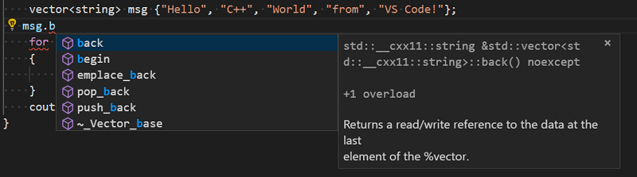
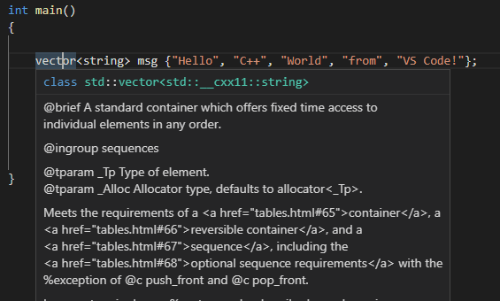
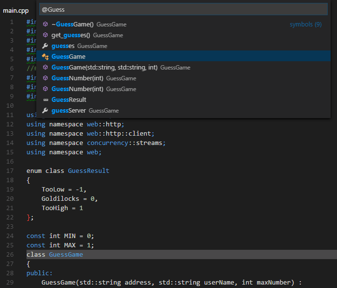
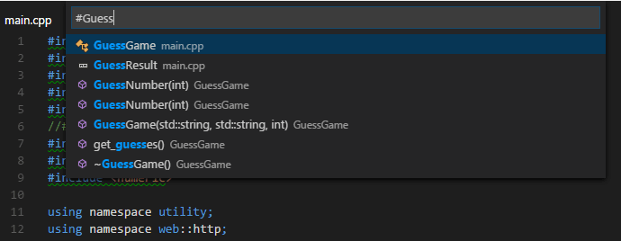
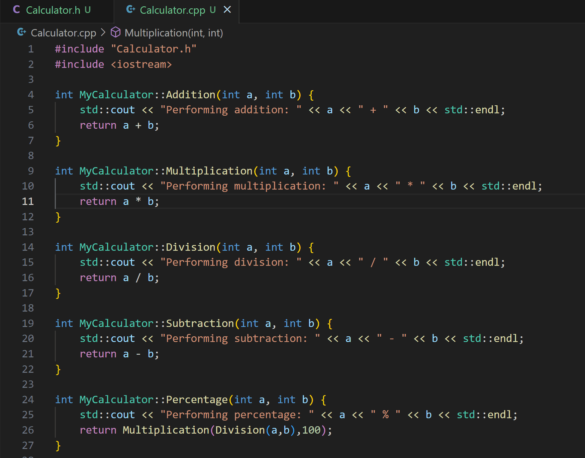
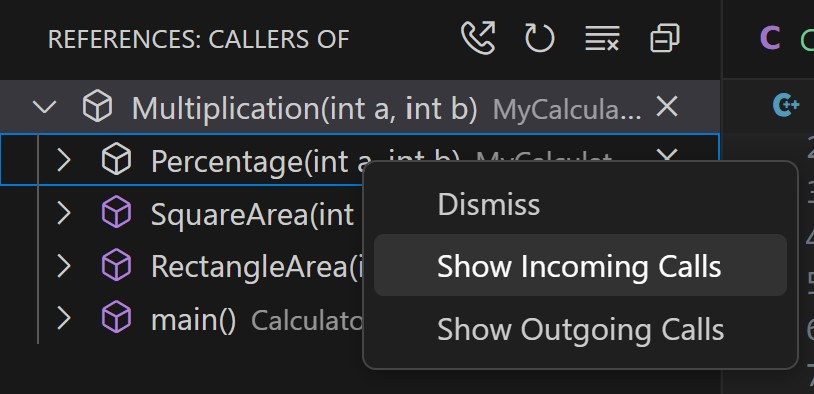
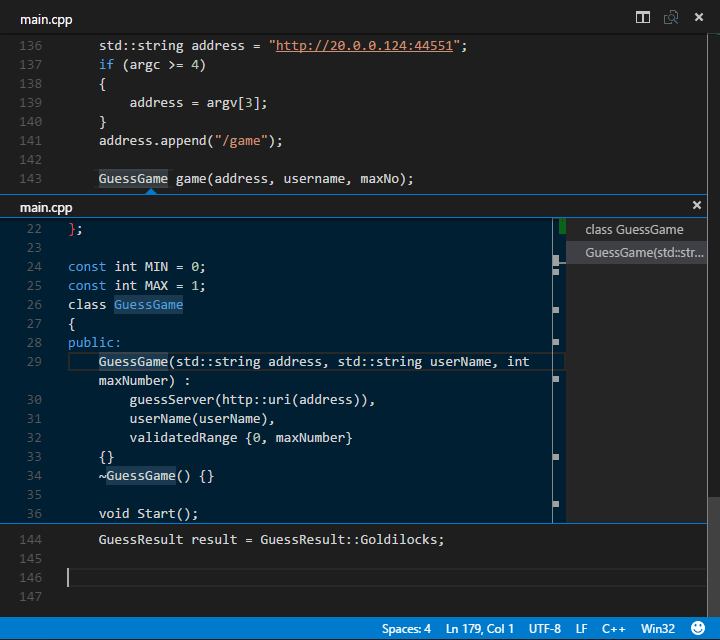

编辑和导航 C++ 代码
本文概述了 C/C++ 扩展特有的代码编辑和导航功能。有关 Visual Studio Code 中常规编辑和导航的更多信息，请参阅基础编辑和代码导航。
编辑 C++ 代码
C/C++ 扩展提供的源代码编辑功能是用于编辑、格式化和理解代码库的强大工具。
识别头文件
为了提供最佳的编辑体验，C++ 扩展需要知道在哪里可以找到代码中引用的每个头文件。默认情况下，该扩展会搜索当前源目录、其子目录以及一些特定于平台的位置。如果找不到引用的头文件，则会在 #include 指令下方显示红色波浪线。
要指定额外的包含目录，请执行以下操作：
- 选择一个没有引用的
#include路径。 - 选择出现的灯泡图标，然后选择
"Edit includePath" 设置，这将打开 C/C++ 扩展的设置编辑器。 - 在 包含路径 部分下，可以指定任何额外包含目录的路径。

列出成员
当你输入成员访问符号（. 或 ->）时，编辑器会显示成员列表。当你输入更多字母时，列表会实时筛选：

代码格式化
Visual Studio Code 的 C/C++ 扩展支持使用 clang-format 和 vc_format 进行源代码格式化。这两种格式化选项都包含在扩展中，其中 clang-format 是默认选项。
你可以通过右键单击上下文菜单中的 格式化文档 (kb(editor.action.formatDocument)) 来格式化整个文件，或者使用 格式化选定内容 (kb(editor.action.formatSelection)) 来仅格式化当前选定内容。你还可以通过以下设置根据用户操作（如键入、保存和粘贴）触发格式化：
editor.formatOnSave- 在保存文件时进行格式化。editor.formatOnType- 在键入时进行格式化（由kbstyle(;)字符触发）。
要了解有关格式化的更多信息，请参阅格式化。
Clang-format
默认情况下，clang-format 样式设置为 file。这意味着，如果在工作区中找到 .clang-format 文件，则该文件中指定的设置将用作格式化参考。否则，格式化将基于 C_Cpp.clang_format_fallbackStyle 设置中指定的默认样式。
目前，默认的格式化样式是 Visual Studio，这是 Visual Studio 中默认代码格式化器的近似版本。它包含以下设置：
UseTab: (VS Code 当前设置)
IndentWidth: (VS Code 当前设置)
BreakBeforeBraces: Allman
AllowShortIfStatementsOnASingleLine: false
IndentCaseLabels: false
ColumnLimit: 0要使用与扩展附带的版本不同的 clang-format，请将 C_Cpp.clang_format_path 设置更改为 clang-format 二进制文件的安装路径。
例如，在 Windows 平台上，使用：
"C_Cpp.clang_format_path": "C:\\Program Files (x86)\\LLVM\\bin\\clang-format.exe"vc_format
默认情况下，如果在正在格式化的代码附近找到包含相关设置的 .editorconfig 文件，则会使用 Visual C++ 格式化引擎而不是 clang-format。否则，请导航到 C_Cpp.formatting 设置并将其设置为 vc_format 以使用 Visual C++ 格式化引擎。
增强语义着色
启用 IntelliSense 后，Visual Studio Code 的 C/C++ 扩展支持语义着色。有关为类、函数、变量等设置颜色的更多信息，请参阅增强着色。有关配置 IntelliSense 的更多信息，请参阅 IntelliSense 配置。
快速信息
你可以将鼠标悬停在符号上以查看其定义的内联视图：

Doxygen 注释
Doxygen 是一种从源代码生成文档的工具。当你使用注释为代码添加注解时，Doxygen 会为这些函数生成文档。对于 doxygen 注释，键入 /** 并按 Enter 键即可生成 doxygen 注释块。支持的 doxygen 标签包括：@brief、@tparam、@param、@return、@exception、@deprecated、@note、@attention 和 @pre。
Markdown 注释
默认情况下，C++ 扩展支持在编辑器中显示一部分 markdown。此子集支持除符号 _ 和 * 之外的所有 markdown 注释。切换新的 注释中的 Markdown 设置，可以启用所有 markdown、保留此 markdown 子集或禁用 markdown 支持。
导航源代码
源代码导航功能可以帮助加深你对代码库的理解。这些功能让你可以快速搜索代码中的符号、导航到它们的定义或查找对它们的引用。
导航功能由存储在本地符号信息数据库中的一组标签提供支持。每当打开包含 C++ 源代码文件的文件夹时，C/C++ 扩展就会创建这些文件中定义的符号的数据库。每当文件发生更改时，此数据库都会更新。如果文档在未保存的情况下关闭，则数据库会更新到最后一次保存的状态。
搜索符号
你可以在当前文件或工作区中搜索符号，以便更快地导航代码。
要在当前文件中搜索符号，请按 kb(workbench.action.gotoSymbol)，然后输入你要查找的符号的名称。此时会出现一个可能的匹配列表，并随着你的输入进行筛选。从匹配列表中选择一项，即可导航到该符号的位置。

要在当前工作区中搜索符号，请按 kb(workbench.action.showAllSymbols)，然后输入符号的名称。此时会出现一个可能的匹配列表。如果你选择的匹配项位于尚未打开的文件中，则该文件将在导航到匹配项的位置之前打开。

你还可以通过 命令面板 (kb(workbench.action.showCommands)) 访问这些命令来搜索符号。使用 快速打开 (kb(workbench.action.quickOpen))，然后输入 @ 命令来搜索当前文件，或输入 # 命令来搜索当前工作区。kb(workbench.action.gotoSymbol) 和 kb(workbench.action.showAllSymbols) 分别是 @ 和 # 命令的快捷键。
调用层次结构
调用层次结构视图显示对某个函数的所有调用或来自该函数的所有调用。它帮助你理解源代码中函数之间复杂的调用关系。
要查看调用层次结构，请选择一个函数，右键单击以显示上下文菜单，然后选择 显示调用层次结构。你也可以使用键盘快捷键（Windows 上为 Shift+Alt+H），或调用 命令面板 (kb(workbench.action.showCommands)) 并运行命令 调用：显示调用层次结构。这将在侧栏中填充调用树，其中包含你选定函数调用的所有函数。

切换侧栏菜单中的电话图标以切换到传入调用。传入调用显示你的函数何时被其他函数引用。你还可以通过选择调用树中已显示的函数并右键单击该函数来查看可用命令，从而探索嵌套调用。

速览
速览功能在 速览窗口 中显示几行代码，这样你就不必离开当前位置。它对于快速了解符号的上下文而无需离开当前代码非常有用。
要打开 速览窗口，请通过右键单击导航到上下文菜单，然后选择 速览。在其中，你可以选择速览符号的定义、声明、类型定义或引用。

在速览窗口打开的情况下，你可以浏览显示的结果列表以找到你感兴趣的结果。如果你想导航到其中一个结果的位置，请选择该结果或在速览窗口左侧显示的源代码中双击。
转到定义
使用 转到定义 功能可以快速导航到源代码中符号的定义位置。在源代码中选择一个符号，然后按 kb(editor.action.revealDefinition)，或者右键单击并从上下文菜单中选择 转到定义。当符号只有一个定义时，你将直接导航到其位置；否则，竞争的定义将显示在速览窗口中，如上一节所述。
如果找不到所选符号的定义，C/C++ 扩展会自动搜索该符号的声明。
转到声明
使用 转到声明 功能可以导航到源代码中符号的声明位置。此功能与 转到定义 类似，但用于声明。在源代码中选择一个符号，右键单击，然后从上下文菜单中选择 转到声明。这将导航到符号声明的位置。
转到引用
使用 转到引用 功能可以了解源代码中符号被引用的频率和位置。在源代码中选择一个符号，然后按 kb(editor.action.goToReferences)，或者右键单击并从上下文菜单中选择 转到引用。如果找到任何引用，它们将显示在速览窗口中。
转到类型定义
使用 转到类型定义 功能可以跳转到源代码中类型的定义位置。在源代码中选择一个类型，右键单击打开上下文菜单，然后选择 转到类型定义。
后续步骤
继续阅读以了解：
- 调试 C++ 代码
- 配置 IntelliSense
- 为 MSVC 配置 VS Code
- 为 Mingw-w64 和 GCC 配置 VS Code
- 为 macOS 配置 VS Code
- VS Code 中的基础编辑
- VS Code 中的代码导航
- VS Code 中的任务
如果你有任何其他问题或遇到任何问题，请在 GitHub 上提交问题。你可能会被要求提供扩展的日志信息以帮助诊断问题。有关提供扩展日志的帮助，请参阅 C/C++ 扩展日志记录。